Alimentación respetuosa en neurodivergencia y TEA
Acompañamiento clínico centrado en las preferencias sensoriales, texturas y bienestar digestivo de cada niño y familia.
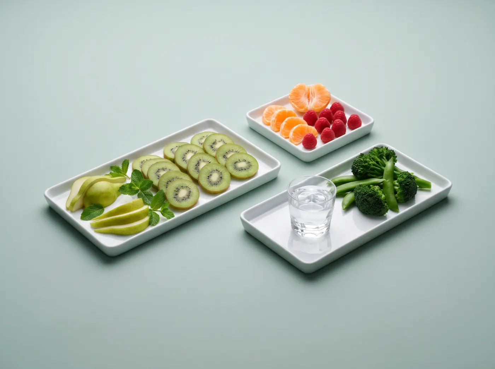
Mi enfoque terapéutico
Realizo una atención nutricional integral, con enfoque en nutrición funcional y biorreguladora. Mi abordaje considera la interacción entre la alimentación, el metabolismo, el estilo de vida y los distintos sistemas del organismo.
Cada persona tiene una historia y necesidades particulares. Por eso, en cada consulta realizo una evaluación personalizada de sus antecedentes, hábitos, síntomas y estado nutricional, buscando comprender los factores que pueden estar influyendo en su salud.
A partir de esta evaluación, desarrollo estrategias nutricionales individualizadas, orientadas a favorecer el equilibrio y la regulación de los procesos fisiológicos, promover la salud intestinal, metabólica e inmunológica y mejorar el bienestar integral.
Una atención personalizada en cada etapa
Revisamos tu historia clínica, antecedentes, alimentación, estilo de vida, síntomas y necesidades nutricionales para comprender tu situación de salud.
Diseño una estrategia adaptada a tus necesidades, considerando la salud digestiva, metabólica, inmunológica y los factores que intervienen en tu bienestar.
Evaluamos tu evolución, realizamos los ajustes necesarios y acompañamos tu proceso para favorecer cambios sostenibles en tu salud.
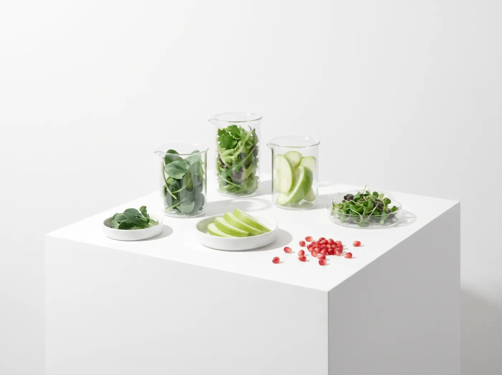
Áreas Clínicas EspecialidadesÁreas de atención y especialización.
Abordo la nutrición desde una mirada funcional, integrativa y personalizada, acompañando diferentes necesidades de salud en cada etapa de la vida.
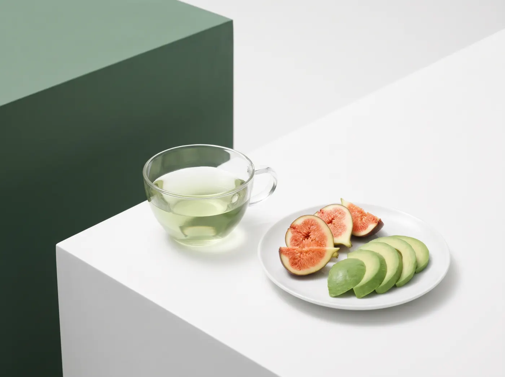
Psiconutrición
Paz con la comidaAcompañamiento en la relación con la alimentación, integrando aspectos emocionales, conductuales y nutricionales para construir una relación más consciente, flexible y saludable con la comida.
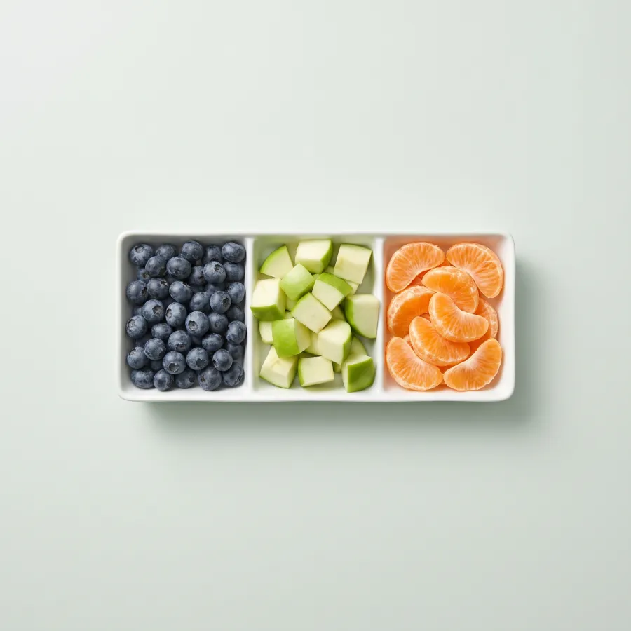
Nutrición en neurodivergencia
TEA, TDAH y selectividad alimentariaAbordaje nutricional especializado que considera las particularidades sensoriales, conductuales y alimentarias de las personas neurodivergentes, favoreciendo una alimentación adecuada y experiencias alimentarias positivas.
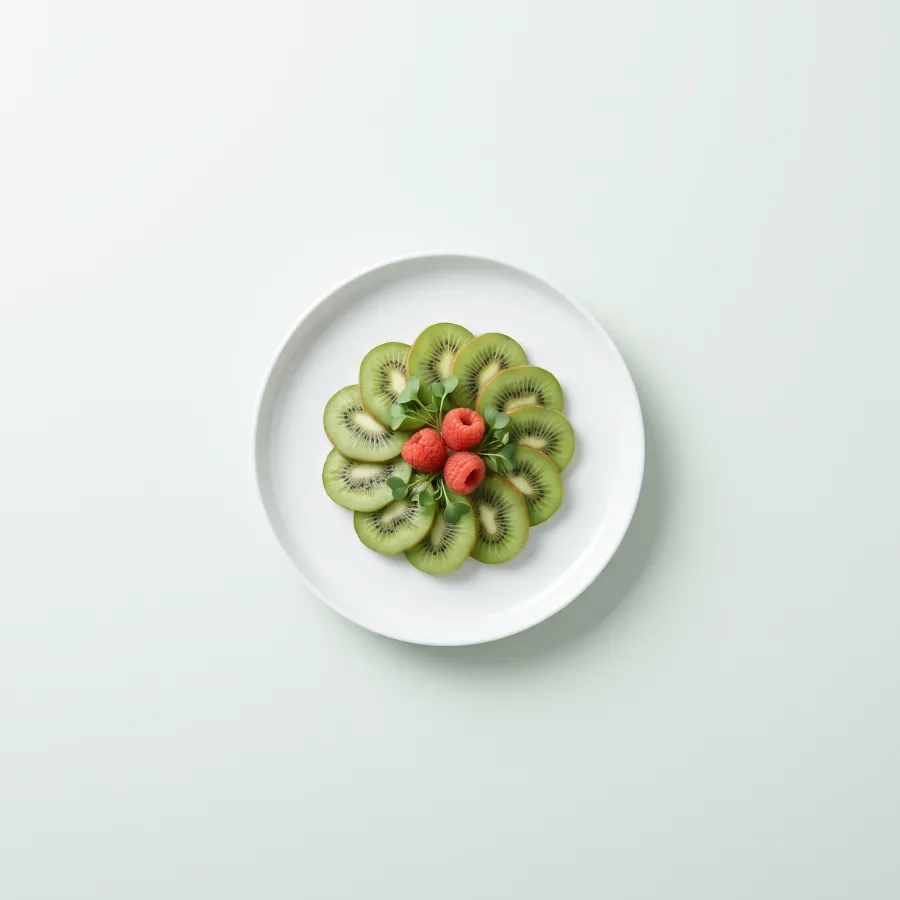
Salud intestinal y microbiota
Equilibrio digestivo desde la nutriciónAbordaje de alteraciones digestivas y gastrointestinales, considerando la microbiota intestinal, la digestión, la absorción de nutrientes y el equilibrio del ecosistema intestinal.
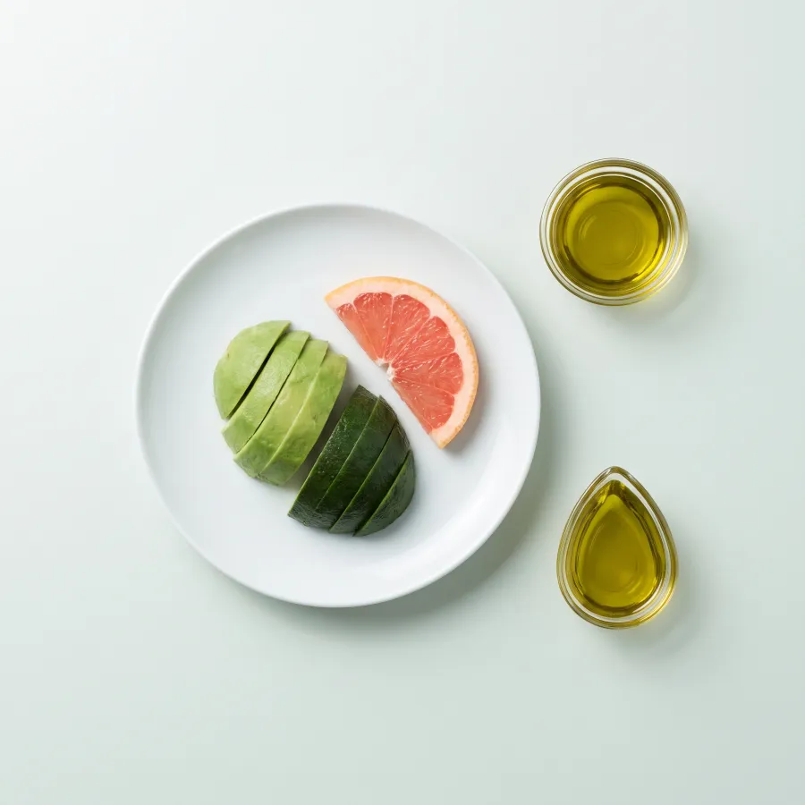
Salud metabólica y hormonal
Equilibrio y función metabólicaAcompañamiento nutricional orientado a la salud metabólica y hormonal, considerando el metabolismo energético, la composición corporal, la sensibilidad a la insulina y los factores que influyen en el equilibrio hormonal.
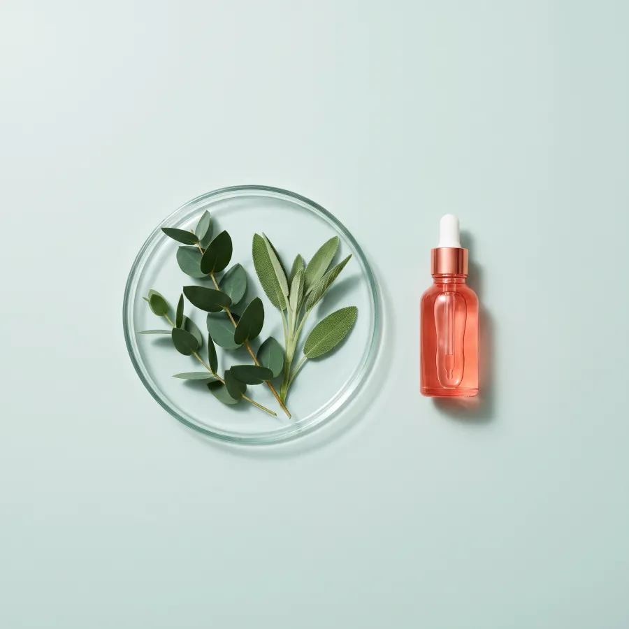
Nutrición antiinflamatoria e inmunonutrición
Nutrición para el equilibrio inmunológicoEstrategias nutricionales orientadas a modular los procesos inflamatorios, apoyar el funcionamiento del sistema inmunológico y favorecer el equilibrio fisiológico, considerando las necesidades individuales y el contexto de salud de cada persona.
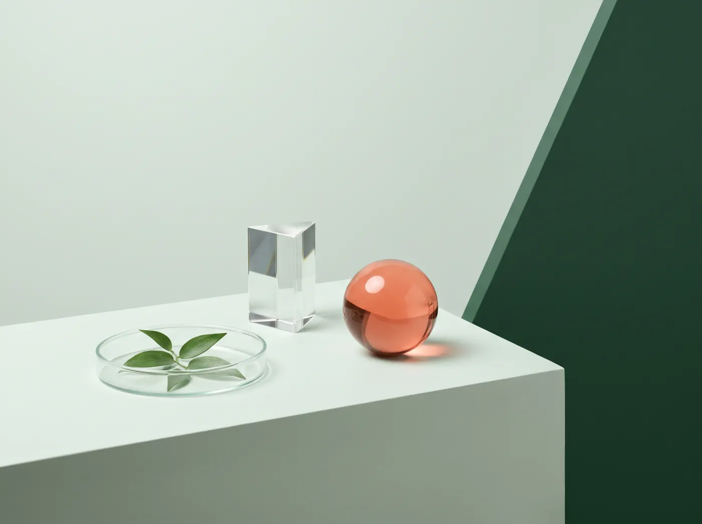
Evaluación Epixlife
Indicadores nutricionales y ambientalesHerramienta complementaria no invasiva que utiliza una pequeña muestra de cabello para generar un informe orientativo que potencia tu estrategia nutricional personalizada.
Cada persona necesita un abordaje diferente. Mi objetivo es comprender tus necesidades y acompañarte con estrategias nutricionales adaptadas a tu historia y etapa de vida.
“Una alimentación adaptada a cada persona, no una persona adaptada a una dieta”
TEA y selectividad alimentaria
“Una alimentación adaptada a cada persona, no una persona adaptada a una dieta”
Atención nutricional para personas neurodivergentes y sus familias. Se consideran las características sensoriales, rutinas, preferencias, síntomas digestivos y necesidades nutricionales.
¿En qué casos puede ayudar?
Abordaje Clínico Respetuoso
Más comprensión, menos presión. Una alimentación que respete la individualidad.
EPIXLIFE
Sistema S-DriveUna mirada complementaria a tu biología para personalizar tu nutrición.
En mi consulta incorporo Epixlife, una herramienta complementaria de evaluación que utiliza una pequeña muestra de cabello para generar un informe orientativo sobre indicadores nutricionales y factores ambientales.
Esta información, junto con tu historia clínica, hábitos y objetivos personales, nos permite explorar nuevas oportunidades para mejorar tu alimentación y bienestar, diseñando estrategias nutricionales adaptadas a tus necesidades.
Descubre cómo podemos trabajar juntos en tu bienestar.
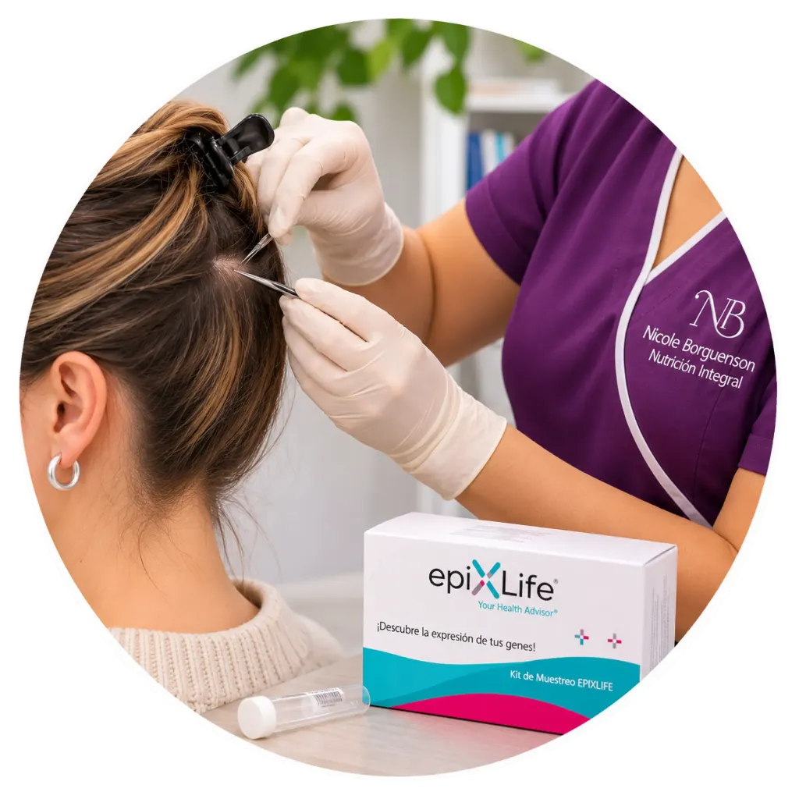
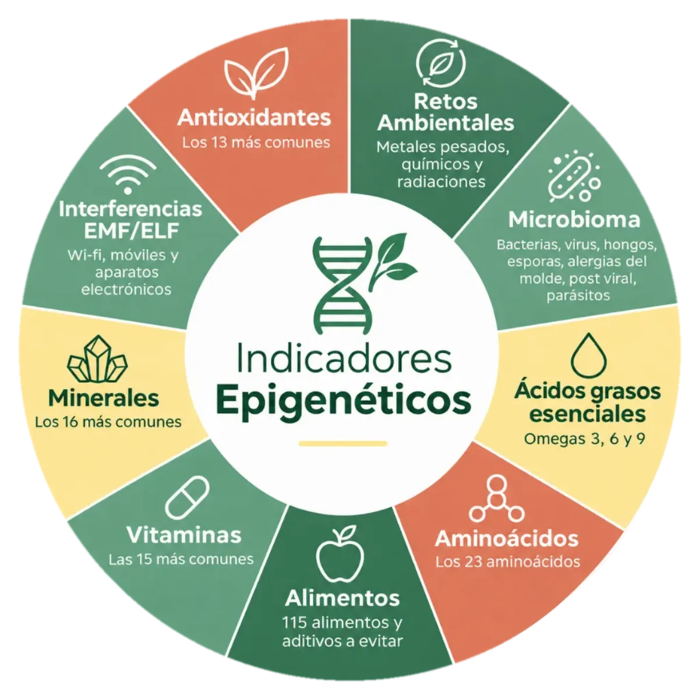
Mapa integral de indicadores en tu informe S-Drive
Cada muestra capilar entrega una lectura cualitativa de 9 áreas clave que integramos con tu historia clínica y evaluación nutricional:
¿Qué información contempla?
- Vitaminas y minerales.
- Antioxidantes y aminoácidos.
- Ácidos grasos esenciales.
- Factores ambientales.
- Indicadores relacionados con sistemas digestivo, inmunológico y circulatorio.
- Factores asociados al estilo de vida.
¿Cómo se realiza?
- 1 Toma de una pequeña muestra capilar, siguiendo las indicaciones del proveedor.
- 2 Procesamiento mediante el sistema S-Drive.
- 3 Recepción del informe cualitativo.
- 4 Interpretación profesional junto con antecedentes y evaluación nutricional.
¿Qué aporta a tu proceso nutricional?
- Información complementaria para orientar la conversación nutricional.
- Identificación de temas de bienestar para explorar junto con la persona.
- Integración con antecedentes, hábitos y necesidades individuales.
- Interpretación profesional y orientación nutricional personalizada.
Aclaración Importante
Epixlife no es una prueba diagnóstica, no confirma deficiencias nutricionales, alergias ni intolerancias, y no sustituye exámenes de laboratorio ni la evaluación médica.
Preguntas frecuentes sobre Epixlife
No analiza ni secuencia el ADN. No debe presentarse como una prueba molecular de epigenética.
No confirma deficiencias; estas requieren evaluación clínica y, cuando corresponda, exámenes de laboratorio.
No. No diagnostica alergias ni intolerancias alimentarias.
No. Tampoco diagnostica enfermedades ni permite modificar tratamientos médicos.
La toma de muestra capilar es rápida, indolora y no requiere extracción de sangre.
Atención presencial en Punta Arenas y coordinación de toma de muestra para atención online en todo Chile.
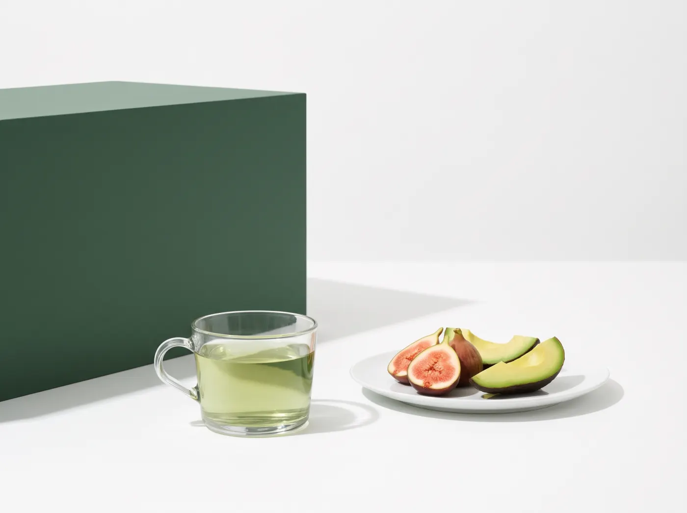
Servicios y programas nutricionales
Cada persona tiene necesidades, ritmos y objetivos diferentes. Por esto, te ofrezco distintas modalidades de atención nutricional, para que puedas elegir la que mejor se adapte a tu momento de vida y a lo que necesitas para cuidar tu salud y bienestar.
Consulta Nutricional Inicial
Punto de partida diagnóstico para evaluar tu estado nutricional, comprender tus síntomas y acordar objetivos realistas.
Evaluación Integral + Epixlife
Profundiza en las señales biológicas de tu cuerpo mediante bio-marcador capilar y dos sesiones clínicas de análisis y entrega.
Programa Integral de 90 Días
Acompañamiento continuo y personalizado para consolidar cambios profundos, con controles periódicos y reajustes guiados.
¿Iniciaste con una consulta y quieres pasar a un programa completo?
Tu inversión previa queda asegurada. Solo abonas la diferencia para avanzar hacia la Evaluación Epixlife o el Programa Integral de 90 días dentro del período de vigencia de 45 días.
Tu proceso continúa entre consultas.
Los cambios en la alimentación y los hábitos se construyen día a día. Mi metodología contempla herramientas de orientación y seguimiento para acompañar tu evolución más allá de cada consulta.
Recursos nutricionales personalizados
Guías, recomendaciones, recetas y herramientas prácticas adaptadas a tus necesidades.
Registro de evolución
Seguimiento de síntomas, digestión, energía y hábitos.
Objetivos progresivos
Metas realistas y estrategias adaptadas a tu rutina.
Seguimiento profesional
Evaluación periódica y ajustes nutricionales según tu respuesta individual.
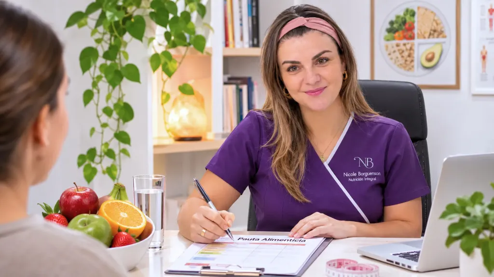
Acompañamiento clínico personalizado
Programa integral de 90 días. Incluye evaluación nutricional inicial, estrategia individualizada, controles programados, ajustes y orientación profesional según las condiciones del servicio contratado.
Plataforma de recursos digitales
Espacio educativo con guías, recetas, planificación y herramientas de autocuidado. No disponible para contratación y sin seguimiento clínico individualizado.
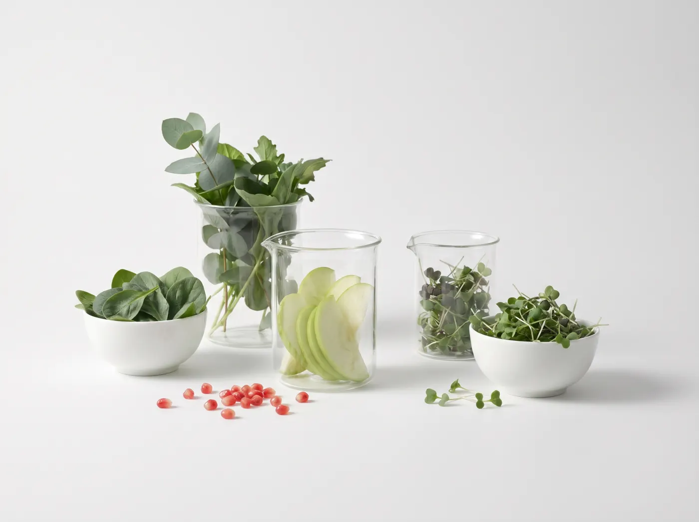
¿Te sientes identificado con alguno de estos síntomas?
Haz clic sobre los síntomas que experimentas habitualmente para recibir una recomendación terapéutica inmediata.
Evaluamos tus analíticas convencionales bajo rangos funcionales óptimos, no solo de enfermedad evidente.
Hinchazón Constante
Despertar con abdomen plano y terminar el día con dolor, distensión profunda o gases molestos.
Fatiga & Neblina
Sensación de no descansar al dormir, somnolencia post-almuerzo y necesidad de cafeína o azúcar.
Desajuste Hormonal
Diagnóstico de SOP, amenorrea hipotalámica, dolor menstrual severo o hipotiroidismo subclínico.
Cansancio de Dietas
Efecto rebote crónico, listas de alimentos "prohibidos", culpa al salir a cenar y desorden de saciedad.
Nicole Borguenson
Nutricionista Biorreguladora · Universidad de Valparaíso (2012) · Col. N.º 4819
“Cada persona tiene una historia y necesidades únicas. Mi trabajo es comprenderlas para construir una estrategia nutricional que tenga sentido para su vida.”
Soy Nicole Borguenson, Nutricionista titulada de la Universidad de Valparaíso en 2012, con más de una década de experiencia clínica en el ámbito público y privado de salud en Chile.
Mi enfoque integra nutrición funcional, biorregulación y evaluación individualizada, considerando la relación entre nutrición, metabolismo, salud intestinal y función inmunológica.
He orientado parte de mi desarrollo profesional al abordaje nutricional de personas neurodivergentes, especialmente en TEA, TDAH y selectividad alimentaria, además de la salud digestiva y metabólica.
Creo en una nutrición que considera la historia, la biología, los hábitos y el contexto de cada persona.
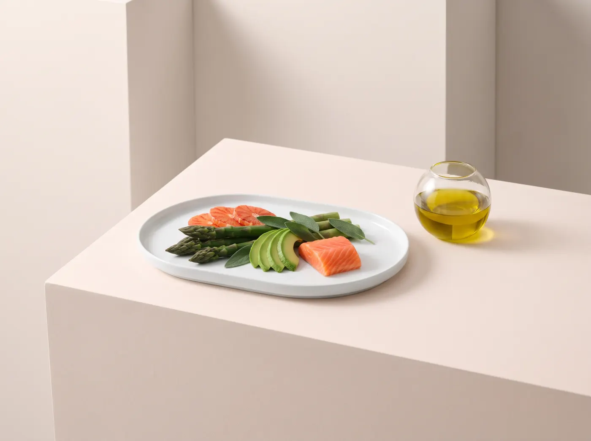
Lo que dicen quienes ya recorrieron el camino
"Llegué con diagnóstico de colon irritable de hace 5 años. Nicole fue la primera en pedirme estudios de disbiosis y explicarme qué pasaba. Hoy como con tranquilidad sin miedo a inflamarme."
"Trabajamos mi resistencia a la insulina y el desorden hormonal del SOP. Lo más valioso fue el cambio de mentalidad: me enseñó a nutrirme con abundancia en lugar de castigarme."
"Recuperé la energía en las mañanas. Dormía 9 horas y despertaba agotado. Con su ajuste en la microbiota y el protocolo circadiano, volví a entrenar con entusiasmo."
Preguntas Frecuentes
Disponemos de tres opciones transparentes: Consulta Nutricional Inicial ($40.000 sesión online / $45.000 sesión presencial), Evaluación Integral con Epixlife ($120.000) y Programa Integral de 90 Días ($240.000). Atendemos de manera presencial en nuestro consultorio de Punta Arenas y 100% online por videollamada para pacientes de todo Chile. Se emite boleta de atención médica reembolsable en Isapres y seguros complementarios.
Si inicias con una Consulta Inicial ($40.000 online o $45.000 presencial) y decides dentro de los primeros 45 días profundizar con la Evaluación Epixlife ($120.000), se reconoce el 100% de tu pago previo y abonas únicamente el saldo restante. Si luego avanzas al Programa de 90 Días ($240.000), abonas solo la diferencia. Tu inversión se acumula paso a paso, sin duplicar pagos.
Es un acompañamiento clínico respetuoso centrado en las preferencias sensoriales (texturas, temperaturas, colores), selectividad alimentaria y bienestar digestivo. No propone curar ni modificar la condición del espectro autista, sino asegurar que la persona reciba todos los micronutrientes necesarios sin batallas ni sobrecarga sensorial, apoyando y conteniendo a las familias y coordinando con los terapeutas tratantes cuando corresponda.
Epixlife es una herramienta complementaria no invasiva que analiza información biofísica a partir de 4 a 5 hebras de cabello con bulbo capilar. Entrega un informe de más de 30 páginas con indicadores de soporte nutricional, estrés oxidativo e impacto ambiental. No constituye un examen de diagnóstico médico ni reemplaza análisis de laboratorio clínico, pero brinda información valiosa para bioindividualizar tu pauta alimentaria de 90 días.
Las consultas online se llevan a cabo mediante videollamada privada (Zoom o Google Meet) con la misma duración y profundidad que una atención presencial. En caso de solicitar la Evaluación Epixlife, coordinamos el envío seguro del kit de recolección capilar a tu domicilio en cualquier región de Chile con instrucciones detalladas.
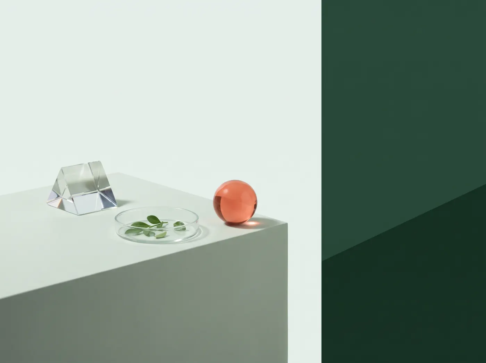
Agenda tu Consulta Nutricional Integrativa
Da el primer paso hacia tu bienestar. Elige atención presencial en Punta Arenas, Online o giras en Magallanes.
Reserva tu hora aquí.
Elige el tipo de atención, selecciona el día y horario que más te acomode y agenda tu consulta en segundos.
Punta Arenas (Carlos Condell 065) · Online · Giras
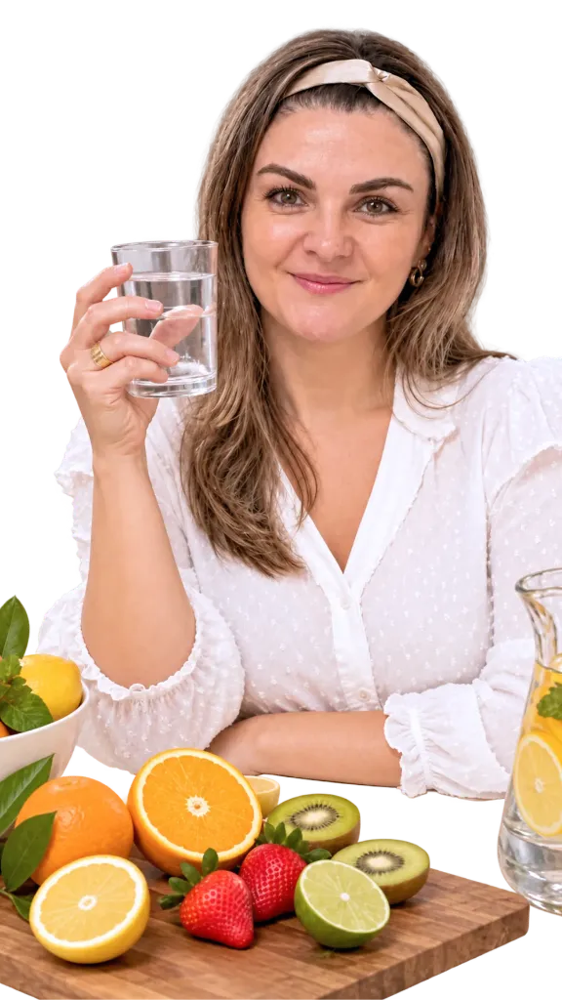
Tu salud merece un abordaje individualizado.
Comienza un proceso de atención nutricional basado en tu historia, tus necesidades y tus objetivos. Te acompaño con una mirada integral, estrategias personalizadas y orientación profesional.
Atención presencial en Punta Arenas y modalidad online para todo Chile.